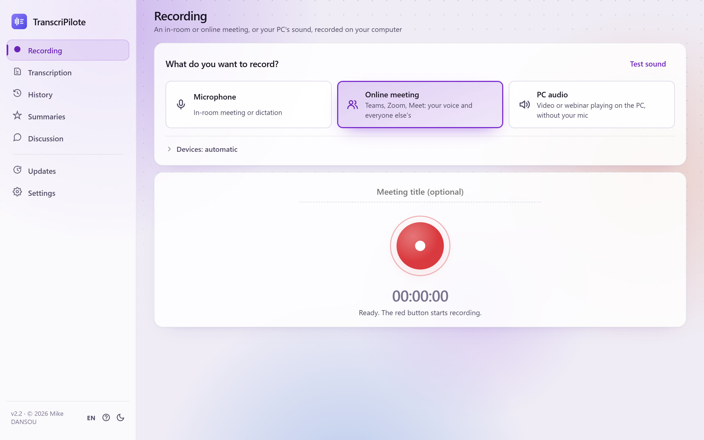
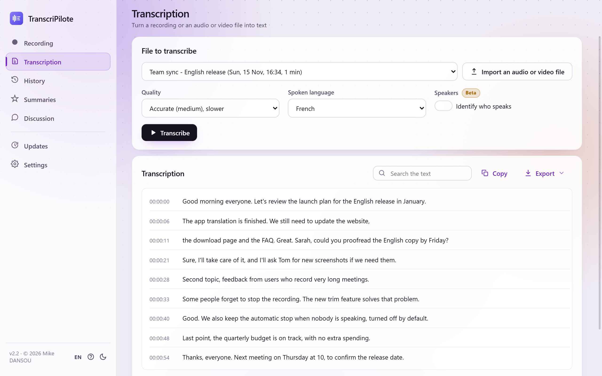
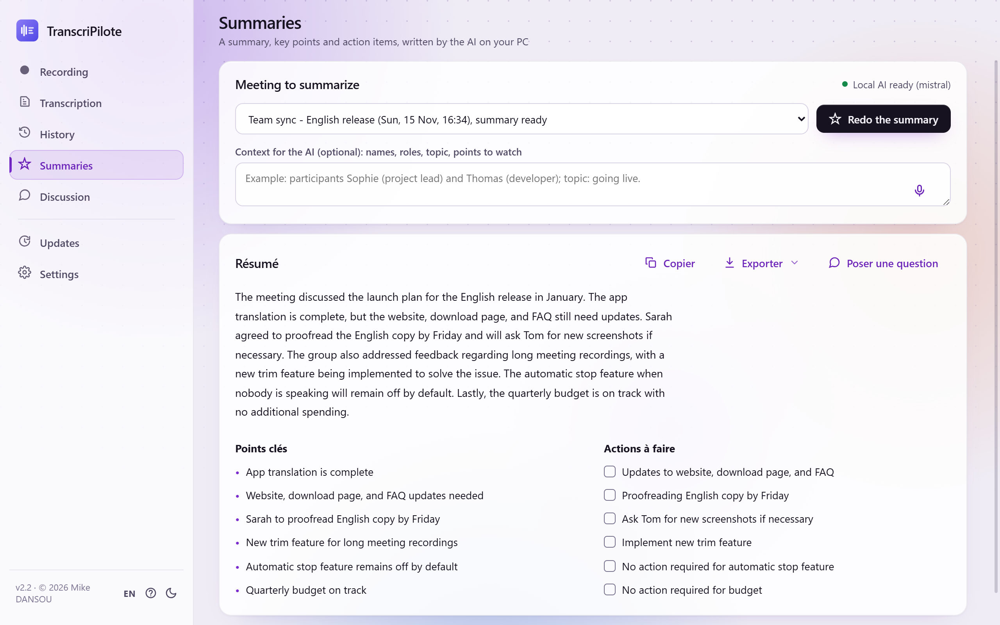
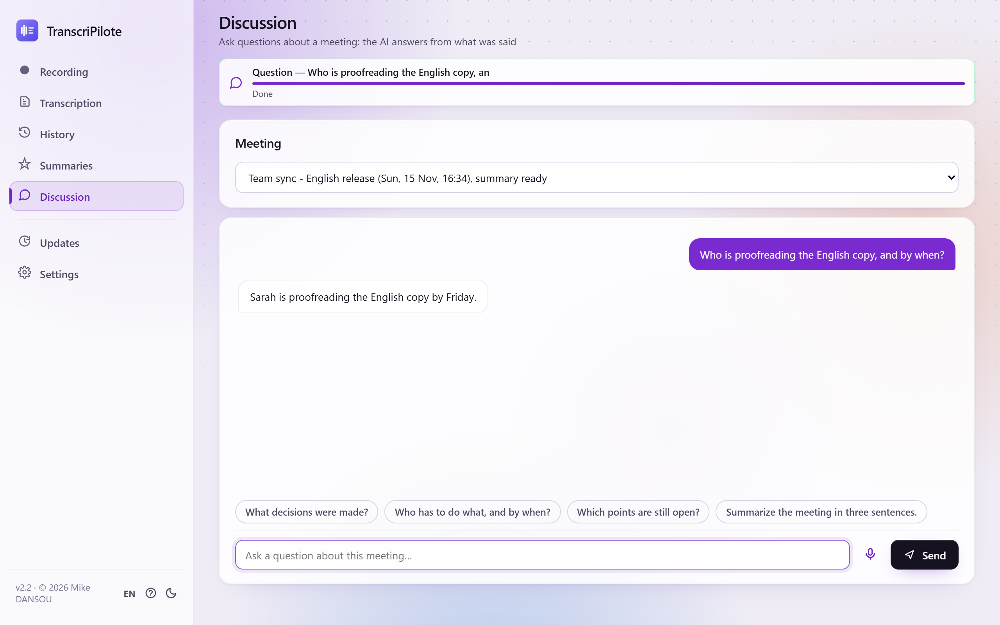
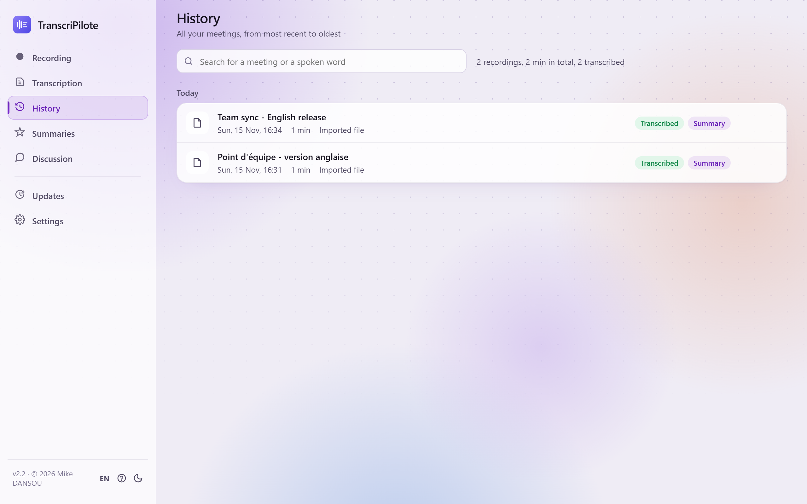
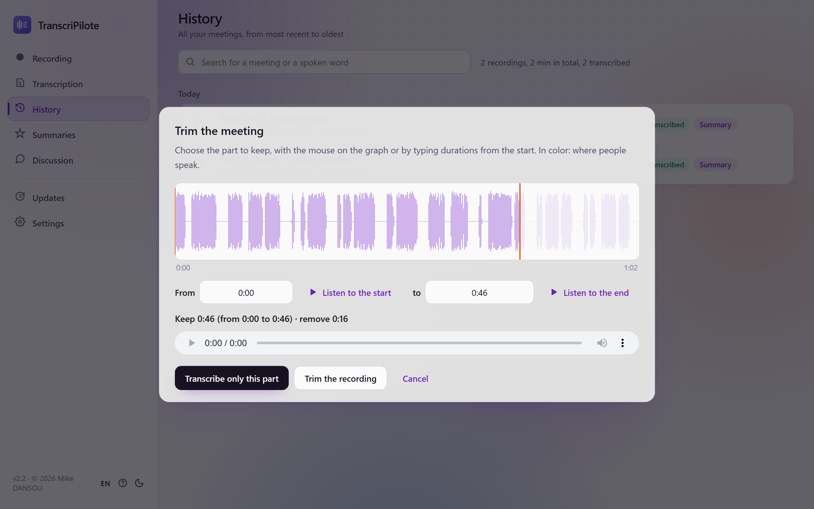

Screenshots
TranscriPilote as it appears on your PC, at full size. Click an image to open it on its own.
Recording
Choosing the source: microphone, online meeting or PC sound.


Transcription
A transcribed meeting, timestamped sentence by sentence.


Summary
The summary, key points and action items, written by your PC's AI.


Discussion
A question asked to the meeting, and the answer.


History
All meetings, with search across transcripts.


Trimming a meeting
Keeping only the useful part of an overlong recording.

